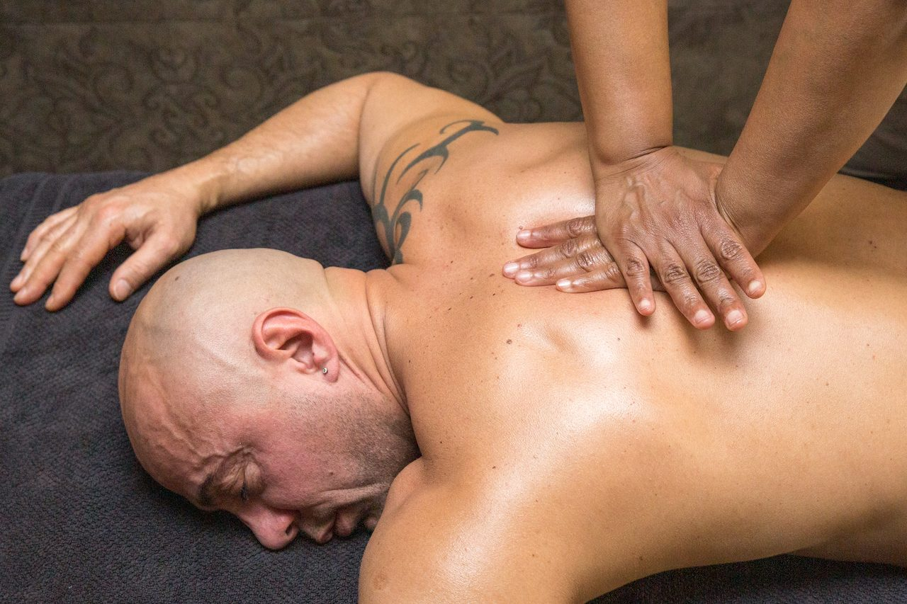

corps entier
Abhyanga, Le massage corps entier
L'Abhyanga est le massage ayurvédique par excellence : un enveloppement huileux rythmé de la tête aux pieds, aux mouvements longs et profonds. Il nourrit les tissus (Dhatus), stimule la circulation lymphatique, calme le système nerveux et rééquilibre les doshas. Idéal pour lutter contre la fatigue, le stress et les douleurs musculaires.